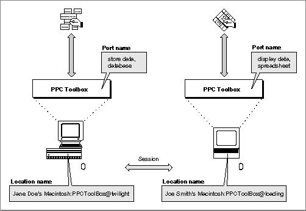

Ports, Sessions, and Message Blocks
To initiate communication between applications, you must first open a port. A port is a portal through which your application can exchange information with another application. A port is designated by a port name and a location name.A port name is a unique identifier for a particular application on a computer. The port name contains a name string, a type string, and a script code for localization. The location name identifies the location of the computer on the network. The location name contains an object string, a type string, and a zone. An application can specify an alias location name by modifying its type string.
Your application can open as many ports as it requires as long as each port name is unique within a particular computer. See "Specifying Port Names and Location Names" beginning on page 11-17 for detailed information on port names and location names.
Through its port, an open application can communicate with another open application during a session. One port can support any number of communication sessions. During a session, an application sends and receives data in the form of a message block. The PPC Toolbox treats each block of data as a byte stream and delivers it in the same sequence in which it was sent.
The words port name, location name, session, and message block are programmatic terms. You should not use them in the user interface of your application or in your user documentation. Instead, refer to a file that contains executable code as an application program. An application program that opens and uses PPC ports supports program linking. When you link two application programs together, you are forming a program link. A link allows two application programs to communicate with each other--you unlink two application programs when you break the link between them. You can compare the link between two application programs to the communication established using telephones. For example, a program link is similar to a telephone connection that enables various forms of communication such as human-to-human, modem-to-modem, and facsimile machine-to-facsimile machine.
Figure 11-1 shows a database application on one computer that has initiated a session with a spreadsheet application located on another computer on the network.
Figure 11-1 A PPC Toolbox session between two applications

The database application's port name consists of "store data" (the name string) and "database" (the type string). Its location name consists of "Jane Doe's Macintosh" (the object string), "PPCToolBox" (the type string), and "twilight" (the AppleTalk zone).
The spreadsheet application's port name consists of "display data" (the name string) and "spreadsheet" (the type string). Its location name consists of "Joe Smith's Macintosh" (the object string), "PPCToolBox" (the type string), and "loading" (the AppleTalk zone).